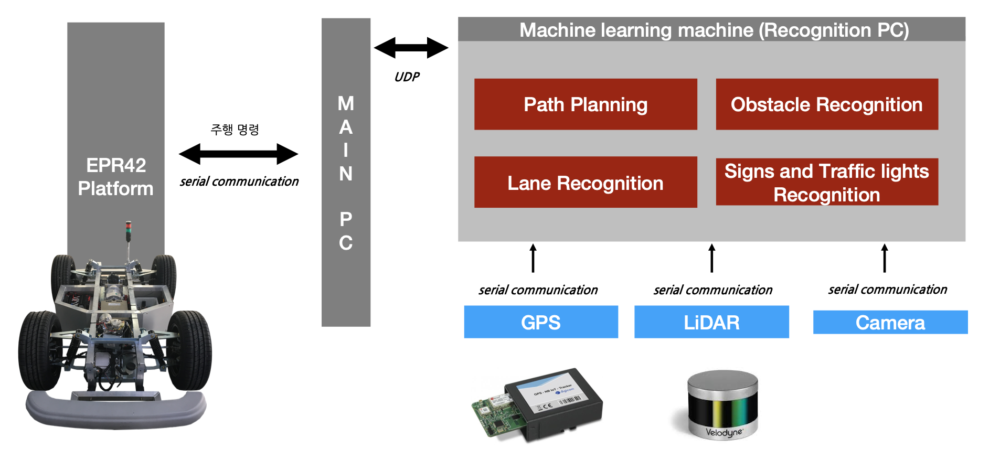

MinSeok Seo
I'm interested in AI research and
how to use it.
Cell Phone : +82 10-4850-5499
Email : king_v_@naver.com
Github : GitHub
Awards & Honors
4st in 2018 Big Data Analysis Competition at Hanbat National University, LINC+-2018-99, How to use marketing through Asian body size analysis.
An Excellent Paper in KICSP ,2019-14, Forest Fire Detection Algorithm Using Image Information : source of this content.
3rd in 2019 Capstone Design Competition at Hanbat National University, Development of OCR-based Applications to Improve Inventory Management.
3rd in 2020 Practical Problem Research Competition at Hanbat National University, Development of modeling technology for learning action and context information based on deep learning.
Project
KORAIL : Artificial intelligence training data construction (secondary) business (2020-09-15 ~ 2020-12-31)
CAST.era : Development of Deep-Meta Extractor (2020-07-01 ~ 2021-07-12 )
Hanbat National University (3rd in Graduation Project) : Development of modeling technology for learning action and context information based on deep learning. (2020.03.01 ~ 2020.11.17)

ETRI(Electronics and Telecommunications Research Institute) : Development of Behavioral Recognition Technology Based on Spatio-temporal Video Features Learning (2019.04.01 ~ 2019.11.15)

ETRI(Electronics and Telecommunications Research Institute) : Implementation of Region Detection Image Processing SW for Autonomous Mission (2019.10.08 ~ 2019.11.29)
ETRI (Electronics and Telecommunications Research Institute) : Marine Object Recognition Fundamental Study. (2019.06.01 ~ 2019.11.30)
ADD (Agency for Defense Development) : Road surface segmentation research for friction force estimation. (2018.12.21 ~ )

Hanbat National University (1st in Graduation Project) : A Study of Recognition Model for Mobile Platform on Driving Environment. (overall 1st prize, 2019.03.01 ~ 2019.10.31)

Hanbat National University (4th in Graduation Project) :Development of OCR-based Applications to Improve Inventory Management (2019.03.01 ~ 2019.10.31) paper
Publications
OCR-based inventory management application KROS(KCI) 2020
Minseok Seo, Daehan Kim, Hyeyoon Kang, *Dong-geol Choi
Spatial-Temporal Ensemble Method for Action Recognition KROS(KCI) 2020
Minseok Seo, Sangwoo Lee, *Dong-geol Choi
Sequential Feature Filtering Classifier arxiv 2020
Minseok Seo, Jaemin Lee, Jongchan Park, *Dong-geol Choi
Forest Fire Detection Algorithm Using Image Information KISPS(KCI) 2019 BEST PAPER
Minseok Seo, *Choong Ho Lee
Development of OCR-based Applications to Improve Inventory Management TEST(SCOPUS) 2019
Minseok Seo, Jaemin Lee, Soyeol Lee, *Dong-Geol Choi
Academic Services
- 2020: BMVC reviewer